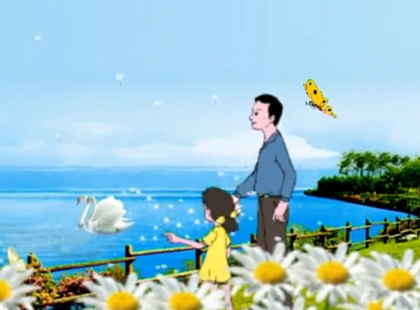

-

6 câu chuyện cười ẩn chứa bài học thâm thúy trong cuộc sống
Anh chồng bước vào phòng tắm ngay sau khi vợ anh vừa tắm xong và có tiếng chuông cửa reo. Cô vợ vội vàng quấn khăn tắm quanh người và chạy ra mở cửa. Cửa mở và anh chàng hàng xóm Bob đang đứng đó.
Xem chi tiết »
-
5 câu chuyện hài hước ẩn chứa bài học cuộc sống ý nghĩa
Không chỉ giúp bạn thư giãn sau những giờ phút làm việc căng thẳng, 5 câu chuyện hài hước dưới đây còn mang lại những bài học ý nghĩa về cuộc sống.
Xem chi tiết »
-
12 mẩu chuyện cười giản dị chứa đạo lý sống thâm sâu
Chúng ta thường nghĩ những lời nói triết lý hẳn phải được đúc kết từ những nhà hiền triết lỗi lạc, từ những câu chuyện thăng trầm trong một đời người. Thế nhưng có đôi khi,bài học đơn giản mà sâu sắc lại đến ngay từ những câu chuyện
Xem chi tiết »
-

8 mẩu chuyện hài hước sẽ cho bạn nhiều ý nghĩa hơn cả việc đọc 8 cuốn sách
Học hỏi không bao giờ có giới hạn, mỗi thứ hàng ngày diễn ra trong cuộc sống mang tới cho con người những ý tưởng và nguồn cảm hứng khác nhau, những câu chuyện phía dưới cũng là ví dụ điển hình.
Xem chi tiết »
-
8 câu chuyện ngắn thâm thúy về cuộc đời
Cuộc sống cần những câu chuyện nhỏ để giúp bạn có được kinh nghiệm sống quý báu, hay ít ra nó cũng có thể giúp các bạn có được chút niềm vui trong những bộn bề này.
Xem chi tiết »
-
3 câu chuyện xúc động về gia đình bạn nên đọc 1 lần trong đời
Đôi khi trên đường đời miết mải, ta quên bẫng đi mất một thứ quan trọng hơn hết thảy mọi thứ, đó là gia đình. Dưới đây là 3 câu chuyện có thể khiến trân trọng hơn gia đình của mình.
Xem chi tiết
Chúc Các Bạn Có Những phút Giây Thư Giãn Vui Vẻ